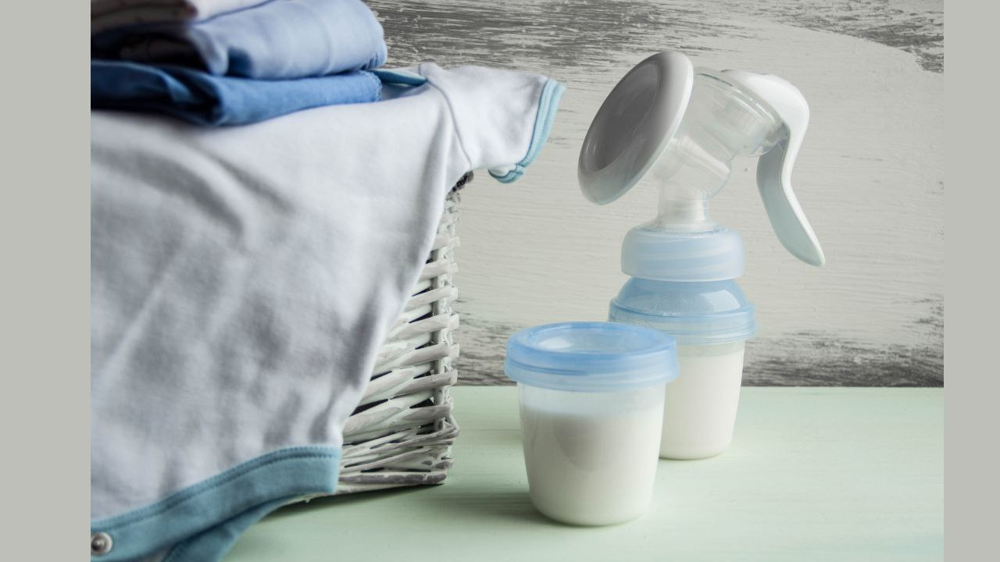

Донорське грудне молоко

Грудне молоко – єдина натуральна природна їжа для людського дитинча.
Донорське грудне молоко (молоко іншої годувальниці, що не є мамою дитини) – справжня паличка-виручалочка у випадках, коли грудне вигодовування неможливе або материнського молока малюкові дійсно не вистачає:
- у мами діагностована гіпоплазія (недостатність залозистої тканини), і малюк об'єктивно потребує догодовування;
- мамі потрібно поїхати кудись або пройти лікування, несумісне з грудним вигодовуванням, а власного «банку молока» немає;
- дитину всиновили/вдочерили, і вона, як всі інші малюки, потребує повноцінного харчування;
- надзвичайні ситуації;
- іноді крихітка залишається зовсім без мами...
За рекомендацією ВООЗ, дитина віком до 6 місяців для забезпечення її оптимального здоров'я, зростання та розвитку має перебувати на виключно грудному вигодовуванні.
Іншими словами, в її раціоні має бути відсутнім будь-яке харчування чи пиття, крім грудного молока. Якщо у вас немає можливості годувати малюка своїм молоком або дитині потрібно догодовування, рекомендується перш за все зайнятися пошуками донорського молока. І тільки якщо така можливість виявилася недоступною, знадобиться штучна суміш.
Догодовування донорським молоком існувало споконвіку, адже практично всю історію людства жінки вигодовували своїх дітей лише грудьми. Іншої придатної для дитини їжі не існувало, і жінки ділилися одна з одною без побоювань.
На жаль, у багатьох сучасних мам ідея годування донорським молоком піднімає безліч страхів. І ми неодмінно приділимо увагу цій важливій темі, щоби зняти всі питання!
Нехай сімей, які за будь-яких умов віддають перевагу природній для дитини їжі, стає більше!
Ми створили групу для мам-годувальниць, які готові поділитися своїм грудним молоком, або потребують його для догодовування або вигодовування свого малюка.
«Молочний затишок» не займається продажем молока, а підтримує його безоплатну передачу, в обмін на подяку.
Ми будемо вдячні, якщо ви поділитеся інформацією про наш чат підтримки зі знайомими мамами.